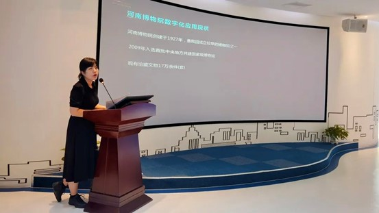

新闻
3月17日上午，国家重点研发计划“文化科技与现代服务业”重点专项“沉浸式文旅体验技术集成与场景创新”项目推进会在南京大学顺利召开。

北京大学马思伟老师主持会议，首先介绍了本项目背景，回顾了项目任务，并展示了河南博物院郑国编钟重建、“火星”沉浸式多模态交互呈现系统、红色主题内容修复、古画动图生成、游客与文物的 3D 融合、《莲鹤方壶》裸眼 3D 显示等前期工作成果。
南京大学陆明、朱昊老师介绍了构建沉浸式多模态交互呈现平台、人脸三维重建、空间光场重建、黄河文化公园场景重建等工作进展情况，并汇报了后续工作计划。
东北大学王昊老师介绍了“激光-可见光-深度”多模态多站点视觉融合方法，通过三维物体表面重建和跨光谱立体匹配，可实现高精度大场景数字孪生。
中国科学院大学张新峰老师介绍了古画肖像口型生成与语音风格转换、游客与文物的 3D 融合与交互等系统建设工作。通过多种沉浸式技术探索与平台建设，优化了河南博物院-郑公大墓出土文物云展览场景，该云展览目前已上线。
中国传媒大学张岳老师介绍了三维全景虚实融合、构建沉浸式质量评价图像序列素材库、设计沉浸式编钟虚拟演奏等工作进展，并对商业模式进行了预估。
中科院计算所席迎来老师提出了基于联合感知的云边端协同、面向异构节点的云边端多维资源联合等优化方法，构建了云边端系统平台等工作进展，并介绍了后续工作计划。
蓝海创意云公司穆凯辉副总裁介绍了黄河、长征等主题应用示范进展情况，总结了与项目相关文旅新趋势、新引擎、新业态、新消费。
专家讨论环节，南京市秦淮区文旅局熊茂林局长指出了文旅发展不均衡的问题，并对项目应用落地提出了颜值、共情、市场三种需要关注的导向。其他参会专家围绕项目也都提出了宝贵意见与想法。
最后，北京大学马思伟老师进行总结。建议项目组成员单位持续关注新消费、新业态，推进产品演示和实际运营，进一步推动文旅产业链的变革、融合和发展。
9月16日上午，国家重点研发计划“文化科技与现代服务业”重点专项“沉浸式文旅体验技术集成与场景创新”项目推进会在苏州创意云网络科技有限公司顺利召开。项目课题组专家以及成员代表共计40人参加了此次会议。

会上，8家相关课题组成员代表就各自单位/团队现阶段的工作内容和进度情况进行了综合性汇报。8名代表分别提出了项目现阶段建设具体进展和措施，明确了计划也表明了决心，将认真落实项目阶段性目标，加快推进重点项目建设。
河南博物院代表就应用示范单位数字化应用现状、发展需求以及对实际工作中存在的问题和瓶颈进行了汇报。

苏州创意云网络科技有限公司穆凯辉详细报告了项目应用示范的整体进展、重点项目的沉浸式体验方案以及项目落地过程中具体的技术需求。南京大学代表就沉浸式多模态与呈现系统、人脸三维重建、文本驱动的人物生成、空间广场重建等技术研发进展进行了汇报。
东北大学代表和中国传媒大学代表就沉浸式内容智能构建与多模态融合技术的整体进展和学术成果进了总结汇报。
北京大学（中国科学院大学）代表就红色人物肖像着色、古画动图生成、历史人物表情生成、6DoF沉浸式展厅、立体式视觉遥现系统等内容进行了汇报。中国科学院计算技术研究所代表就沉浸式内容转换与云边端协同计算技术研究的目标、进展和后续计划进行了汇报。
石家庄铁道大学代表进行了沉浸式长城攀登的演示和应用讲解。
随后，与会专家代表们对项目组上半年的工作进展表示肯定，并就存在的问题提出了建设性的建议，强调了各单位需汇聚目标，按照统一标准和规范推进工作，并从文化产业角度提供了关于项目应用示范的十大场景选择的建议。

会议最后，项目负责人马思伟和课题四负责人穆凯辉对项目应用示范工作中的问题和初步改进措施进行了总结性发言。通过本次项目推进会，课题组参会人员了解了“沉浸式文旅体验技术集成与场景创新”项目最新研究进展。同时，各位与会专家的研究展望与构想也让参会人员开阔了思路。

4月2日，科技创新2030—“新一代人工智能”重大项目2021年立项项目“连续学习理论和方法”项目启动暨实施方案论证会以线下线上相结合的形式召开，线下会场设在北京交通大学。科技部高技术中心、项目牵头单位北京交通大学领导，科技部项目专家组、项目顾问专家组，项目负责人、课题负责人、项目组骨干成员及专项办相关成员40余人参加了会议。


北京交通大学副校长余祖俊教授首先代表项目牵头单位对与会嘉宾致以诚挚欢迎，并介绍了学校在项目相关研究领域扎实的科研基础，并表示将全方位支持项目开展，保障项目顺利实施并取得突出成果。科技部高技术信息处傅耀威处长围绕重点专项设置的背景和目标进行了介绍，表达了对项目“突出亮点、实现突破、达到引领”的殷切期望，要求各方高度重视，做好统筹协作，高标准完成项目目标。
项目负责人北京交通大学赵耀教授从项目概要、组织管理、实施计划、成果与考核方式及保障措施等五个方面对项目实施方案进行了详细介绍。与会专家重点围绕项目的核心技术创新点、项目亮点特色成果、项目组织管理方案的落实、课题与承担单位接口等方面进行了质询，并提出了具体意见建议。最后，专家组通过质询讨论形成评估意见，认为项目实施方案与项目任务书要求一致，项目阶段目标和分工明确，技术路线和计划安排合理，实施方案合理可行，一致同意通过项目的实施方案论证。

本项目在连续学习范式层面和人机协同层面上具有重要理论科学价值、在实际应用层面上具有重要意义。通过本项目的研究，有望在连续学习理论方面取得突破，并在应用层面上形成一系列相关任务的开源基准数据集、软件框架及评测标准，打造连续学习应用示范新标杆。